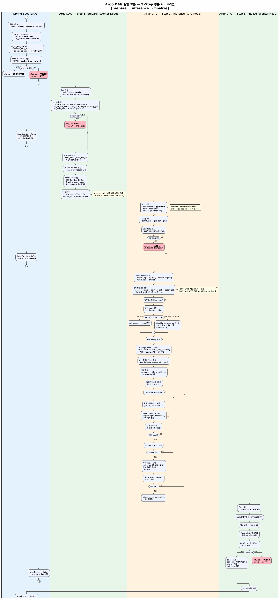

하천·계곡 및 주변 지역 불법 시설 정비 지원시스템
요구사항 정의서
Requirements Definition Document — v1.0
1. 문서 개요
시스템명
하천·계곡 및 주변 지역 불법 시설 정비 지원시스템
제공 플랫폼
한국국토정보공사 (LX)
문서 버전
v1.0
작성일
2026-04-02
문서 목적 — 본 문서는 한국국토정보공사 플랫폼 기반의 하천·계곡 및 주변 지역 불법 시설 정비 지원시스템 구축을 위한 요구사항을 정의하고, 개발 범위를 협의하기 위한 문서입니다.
2. 사업 목적
하천·계곡 및 주변 지역의 불법 시설물을 체계적으로 탐지·관리하기 위한 지도 기반 지원시스템을 한국국토정보공사(LX) 플랫폼 위에 구축합니다.
주요 목표
- 지도 기반 시각화: 하천·계곡 데이터를 지도 위에 직관적으로 표출하여 불법 시설 현황 파악
- 사용자 맞춤 서비스: 전국 이용자와 특정 지역 이용자에게 각각 최적화된 접속 환경 제공
- AI 기반 탐지: 위성/항공 영상을 활용한 불법 시설 자동 탐지 파이프라인 구축
- 관리 체계 연동: 기 구축된 시스템 관리자 포털의 데이터를 활용하여 효율적 운영
3. 시스템 구성 개요
본 시스템은 크게 세 가지 서비스 영역으로 구성됩니다.
| No. | 서비스 영역 | 설명 | 비고 |
|---|---|---|---|
| 1 | 전국 서비스 | 전국 단위 하천·계곡 데이터를 조회하는 서비스 (전용 로그인·헤더·디자인) | 신규 구축 |
| 2 | 지역 서비스 | 특정 지자체·지역 데이터를 조회하는 서비스 (지역 전용 로그인·헤더·디자인) | 신규 구축 |
| 3 | 시스템 관리자 포털 | 시스템 전체 데이터 및 사용자를 관리하는 관리 포털 | 기 구축 |
핵심 — 전국 서비스와 지역 서비스는 각각 별도의 로그인 페이지를 통해 접속하며, 접속 경로에 따라 헤더와 디자인이 다르게 구성됩니다. 단, 핵심인 지도 기반 서비스는 동일합니다.
4. 사용자 분류
사용자는 접속 범위에 따라 두 가지 유형으로 구분되며, 각각 별도의 로그인 페이지를 통해 접속합니다.
| 사용자 유형 | 설명 | 접속 방식 | 디자인 |
|---|---|---|---|
| 전국 이용자 | 전국 단위 하천·계곡 데이터를 열람하는 사용자 | 전국 전용 로그인 페이지 | 전국 서비스 테마 |
| 특정 지역 이용자 | 특정 지자체·지역의 데이터를 열람하는 사용자 | 지역 전용 로그인 페이지 | 지역 서비스 테마 |
5. 권한 체계
| 권한 | 설명 | 주요 기능 |
|---|---|---|
| 열람자 | 지도 데이터를 조회·열람하는 일반 사용자 | 지도 조회, 검색, 데이터 열람 |
| 기관 관리자 | 소속 기관의 데이터를 관리하는 관리자 | 데이터 관리, 사용자 관리, 통계 열람 |
| 시스템 관리자 | 시스템 전체를 관리하는 최고 관리자 (기 구축된 관리자 포털에서 운영) |
전체 시스템 설정, 데이터 관리, 모니터링 |
6. 접속 및 인증
6.1 접속 흐름
| 단계 | 전국 이용자 | 특정 지역 이용자 |
|---|---|---|
| 1 | 전국 서비스 로그인 페이지 접속 | 지역 서비스 로그인 페이지 접속 |
| 2 | 로그인 / 회원가입 | 로그인 / 회원가입 |
| 3 | 전국 서비스 테마 헤더 노출 | 해당 지역 테마 헤더 노출 |
| 4 | 동일한 지도 기반 서비스 이용 | |
6.2 인증 요구사항
- 전국 이용자와 특정 지역 이용자는 분리된 로그인 URL을 통해 접속
- 접속 경로에 따라 서비스 헤더, 로고, 색상 테마가 다르게 적용
- 로그인 후 권한(열람자/기관 관리자)에 따른 메뉴 접근 제어
7. 화면 구성 요구사항
7.1 접속 경로별 화면 구성
| 구성 요소 | 전국 서비스 | 지역 서비스 |
|---|---|---|
| 헤더 | 전국 서비스 전용 헤더 (LX 로고 + 전국 타이틀) | 해당 지역 전용 헤더 (지역 로고 + 지역명) |
| 디자인 테마 | 전국 서비스 색상·스타일 | 지역별 커스텀 색상·스타일 |
| 로그인 페이지 | 전국 전용 디자인 | 지역 전용 디자인 |
| 지도 서비스 | 동일한 지도 기반 서비스 | |
7.2 공통 화면 구성
- 헤더: 로고, 서비스명, 사용자 정보, 로그아웃
- 지도 영역: 메인 지도 뷰 (전체 화면 기반)
- 사이드 패널: 검색, 필터, 상세 정보 등
- 하단 정보: 범례, 좌표 정보 등
8. 공통 기능 요구사항
접속 경로(전국/지역)에 관계없이 동일하게 제공되는 핵심 기능입니다.
| No. | 기능 | 요구사항 |
|---|---|---|
| C-01 | 지도 표시 | 하천·계곡 및 주변 지역 데이터를 지도 위에 시각화 |
| C-02 | 검색 | 지역명, 하천명 등으로 지도 데이터를 검색 |
| C-03 | 필터링 | 불법 시설 유형, 상태 등 조건별 필터링 |
| C-04 | 상세 조회 | 개별 시설의 상세 정보 확인 |
| C-05 | 데이터 연동 | 시스템 관리자 포털에서 관리되는 데이터 조회·활용 |
9. 전국 서비스 요구사항
전국 이용자 전용 로그인 페이지를 통해 접속하는 사용자에게 제공되는 기능입니다.
| No. | 기능 | 요구사항 |
|---|---|---|
| N-01 | 전국 로그인 | 전국 서비스 전용 로그인/회원가입 페이지 (전국 테마 디자인) |
| N-02 | 전국 헤더 | LX 로고, 전국 서비스 타이틀이 표시되는 전용 헤더 |
| N-03 | 전국 지도 조회 | 전국 범위의 하천·계곡 데이터를 지도에서 조회 |
10. 지역 서비스 요구사항
특정 지역 이용자 전용 로그인 페이지를 통해 접속하는 사용자에게 제공되는 기능입니다.
| No. | 기능 | 요구사항 |
|---|---|---|
| R-01 | 지역 로그인 | 특정 지역 전용 로그인/회원가입 페이지 (지역 테마 디자인) |
| R-02 | 지역 헤더 | 해당 지역 로고, 지역명이 표시되는 커스텀 헤더 |
| R-03 | 지역 지도 조회 | 해당 지역 범위의 하천·계곡 데이터를 지도에서 조회 |
11. 시스템 관리자 포털
기 구축 완료 — 시스템 관리자 포털은 이미 구축되어 운영 중이며, 해당 포털에서 관리되는 데이터를 본 시스템(전국/지역 서비스)에서 활용합니다.
11.1 현황
- 시스템 관리자 포털은 별도 구축 완료 상태
- 본 서비스는 관리자 포털의 데이터를 조회·활용하는 구조
11.2 추가 개발 사항
추후 협의 — 시스템 관리자 포털의 기능 변경 사항은 별도로 전달 예정이며, 해당 내역은 개발 범위에 포함됩니다. TBD
12. 개발 범위
| No. | 개발 항목 | 상세 내용 |
|---|---|---|
| D-01 | 전국 이용자 로그인 | 전국 서비스 전용 로그인/회원가입 페이지 개발 |
| D-02 | 특정 지역 이용자 로그인 | 지역별 전용 로그인/회원가입 페이지 개발 |
| D-03 | 접속 경로별 테마 적용 | 로그인 경로에 따라 헤더, 로고, 색상 테마 분기 처리 |
| D-04 | 지도 기반 서비스 | 지도 위 하천·계곡 데이터 시각화, 검색, 필터링, 상세 조회 |
| D-05 | 권한 관리 | 열람자/기관 관리자 권한에 따른 기능 접근 제어 |
| D-06 | 관리자 포털 데이터 연동 | 기 구축된 시스템 관리자 포털 데이터 활용 연동 |
| D-07 | 시스템 관리자 포털 추가 개발 | 관리자 포털 기능 추가/변경 사항 (추후 전달 예정) TBD |
13. AI 추론 파이프라인
불법 시설 탐지를 위한 AI 추론 파이프라인의 실행 흐름입니다. Argo DAG 기반 3단계(prepare → inference → finalize) 구조로 동작합니다.
13.1 파이프라인 개요
| 단계 | 실행 환경 | 역할 |
|---|---|---|
| 요청 접수 | Spring Boot (LNXI) | 추론 요청 수신, DB 등록 (PENDING), Argo Workflow 제출 |
| Step 1: prepare | Worker Node | DB 조회, 필지/구역 정보 추출, config.json + job-items.json 생성 후 S3 업로드 |
| Step 2: inference | GPU Node | YOLO 모델 로드, 래스터 데이터 읽기, 필지별 타일 분할 추론, 결과 GeoJSON 생성 |
| Step 3: finalize | Worker Node | GeoJSON 병합, GPKG 생성, PostgreSQL 적재, GeoServer 레이어 발행 |
13.2 상세 실행 흐름

클릭하면 원본 크기로 확인할 수 있습니다
13.3 오류 코드 정의
| 오류 코드 | 발생 단계 | 설명 |
|---|---|---|
INFRA |
요청 접수 / finalize | Argo 제출 실패, GeoServer 발행 실패 등 인프라 오류 |
DATA |
Step 1: prepare | 기초데이터 미비, DB 무결성 문제 |
MODEL |
Step 2: inference | 모델 가중치 파일 없음, 로드 실패 |
모니터링 — 각 단계의 실패는 Argo Events → Kafka를 통해 실시간으로 알림 처리되며, 상태값(sttu_cd)으로 추적 관리됩니다.